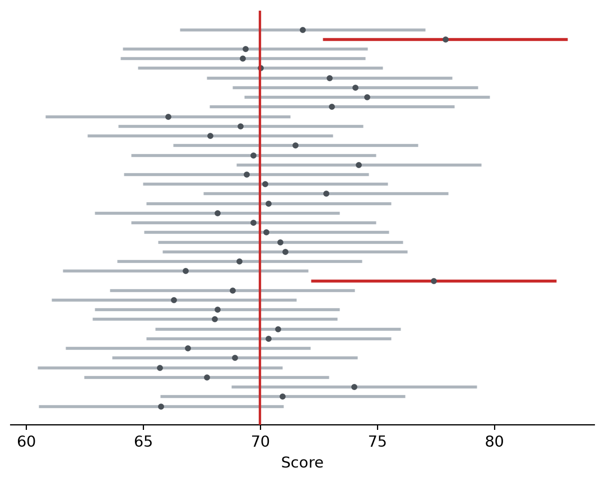
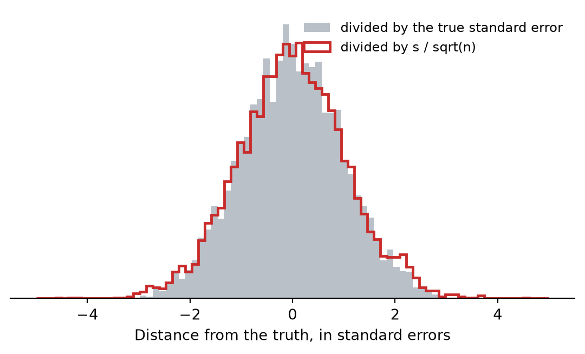

import numpy as np
import matplotlib.pyplot as plt
rng = np.random.default_rng(68)
population = np.clip(np.round(rng.normal(70, 12, 10_000)), 0, 100)
our_sample = rng.choice(population, 20, replace=False)4 Confidence Interval
Keywords: confidence interval, coverage, t distribution, degrees of freedom
The last chapter ended owing two numbers. Every band it drew was centered on \(\mu\) and sized from \(\sigma\), and getting either one means measuring all 10,000 students. A real study measures 20. This chapter builds the same kind of band out of those 20.
4.1 Turning the statement around
Go back to Figure 3.5. We could plot that histogram only because we invented the 10,000 students and could sample them as often as we liked. In the real world nobody can. A study draws one sample and computes one mean, and that is the whole of it: a single number, with no histogram around it and no red line to measure from.
Your one mean is one of those 5,000. It came from that bell, even though you cannot see the bell.
And we do know two things about it. First, the bell sits centered on the true mean: that is unbiasedness from Section 1.4, which said the estimates scatter around the truth rather than to one side of it. Second, the bell’s width is the standard error.
We will keep treating that width as known for now, exactly as the last chapter did, and come back to it.
What we cannot do is place it. Centering the bell means knowing \(\mu\), and \(\mu\) is what we are looking for.
So the sentence we ended on last chapter cannot be used as it stands. “95% of sample means land within 2 standard errors of the true mean” is a rule you can only follow if you already know the true mean.
Look at what it is claiming, though.
\[ \left| \bar{x} - \mu \right| \le 2 \times \text{SE} \]
It is a claim about the gap between two numbers, and a gap does not care which end you measure from. If the estimate is within 2 standard errors of the truth, then the truth is within 2 standard errors of the estimate. Both sentences describe the same inequality.
That is the move. We cannot center a band on \(\mu\), but we can center one on \(\bar{x}\), and the two bands catch each other exactly as often.
Take the sample mean, mark out a band on each side, and offer that range as the answer. It is called a confidence interval.
One adjustment before building one. The last chapter used 1, 2 and 3 standard errors because whole numbers were easy to count with, and 2 came out at roughly 95%. Roughly is no longer good enough once we are drawing a specific range and attaching a specific percentage to it. The exact multiplier for 95% of a normal distribution is 1.96, and that is what we will use from here.
4.2 Intervals, when we know \(\sigma\)
Start in the comfortable case. Pretend for a moment that we know \(\sigma\), so the standard error really is 2.67 and every interval we draw has the same width.
Draw 5,000 samples, build an interval around each one, and see how many contain the true mean. For a 95% interval the multiplier is 1.96 rather than 2, which is the exact figure the normal distribution gives.
rng_sim = np.random.default_rng(2024)
picked = np.array([rng_sim.choice(population.size, 20, replace=False)
for _ in range(5_000)])
draws = population[picked]
means = draws.mean(axis=1)
s = draws.std(axis=1, ddof=1)
truth = population.mean()
se = population.std() / np.sqrt(20)
lower = means - 1.96 * se
upper = means + 1.96 * se
covered = (lower <= truth) & (truth <= upper)
print(f"Intervals containing the true mean: {covered.mean():.1%}")Intervals containing the true mean: 95.1%fig, ax = plt.subplots(figsize=(7, 5))
for i in range(40):
color = "#adb5bd" if covered[i] else "#c92a2a"
ax.plot([lower[i], upper[i]], [i, i], color=color, linewidth=2,
solid_capstyle="butt")
ax.plot(means[i], i, "o", color="#495057", markersize=3, zorder=3)
ax.axvline(truth, color="#c92a2a", linewidth=1.6, zorder=4)
ax.set_yticks([])
ax.set_xlabel("Score")
ax.spines[["top", "right", "left"]].set_visible(False)
plt.show()
Figure 4.1 is the picture to hold on to. The vertical line is fixed. The horizontal bars slide about, because each one was built from a different 20 students, and a bar either catches the line or it does not. 2 of these 40 missed.
That is what the 95% counts: intervals, not truths. Build an interval this way and 95 times in 100 it will contain the true mean. Your own interval either does or it does not, and you will never find out which.
4.3 What \(s\) costs us
Now drop the pretense. We do not know \(\sigma\), so we cannot use 2.67. Each sample has to supply its own standard error from its own spread, which means every interval now has its own width as well as its own center.
print(f"True sigma: {population.std():.2f}")
print(f"s across the 5,000 samples: "
f"smallest {s.min():.2f}, median {np.median(s):.2f}, largest {s.max():.2f}")True sigma: 11.94
s across the 5,000 samples: smallest 5.61, median 11.78, largest 18.99That is a wide range for something meant to stand in for 11.94. One sample in this set saw a spread of 5.61 and another saw 18.99. The first would draw an interval less than half the proper width, the second more than one and a half times it.
Repeat the count with each sample using its own \(s\).
estimated_se = s / np.sqrt(20)
lower_s = means - 1.96 * estimated_se
upper_s = means + 1.96 * estimated_se
covered_s = (lower_s <= truth) & (truth <= upper_s)
print(f"Using the true standard error: {covered.mean():.1%}")
print(f"Using s from each sample: {covered_s.mean():.1%}")Using the true standard error: 95.1%
Using s from each sample: 93.2%We aimed for 95% and got 93%. Nearly two intervals in every 100 that should have caught the truth did not.
The damage is done by the samples where \(s\) came out small. Those draw narrow intervals, and a narrow interval is a worse bet. The samples where \(s\) came out large draw wide intervals that catch the truth easily, but they cannot make up the difference: an interval that was going to succeed anyway does not succeed twice.
4.4 The \(t\) distribution
The fix is to stop using 1.96. If dividing by an estimated standard error makes us miss too often, then we need to reach further than 1.96 standard errors to get our 95% back.
How much further? We can measure it. For each of the 5,000 samples, work out how far its mean fell from the truth, measured in that sample’s own estimated standard errors.
t_statistic = (means - truth) / estimated_se
print(f"Middle 95% of these runs from "
f"{np.quantile(t_statistic, 0.025):.2f} to {np.quantile(t_statistic, 0.975):.2f}")Middle 95% of these runs from -2.10 to 2.13z_statistic = (means - truth) / se
bins = np.linspace(-5, 5, 80)
fig, ax = plt.subplots(figsize=(7, 3.6))
ax.hist(z_statistic, bins=bins, color="#adb5bd", alpha=0.85,
label="divided by the true standard error")
ax.hist(t_statistic, bins=bins, histtype="step", color="#c92a2a", linewidth=1.8,
label="divided by s / sqrt(n)")
ax.legend(frameon=False, fontsize=9)
ax.set_yticks([])
ax.set_xlabel("Distance from the truth, in standard errors")
ax.spines[["top", "right", "left"]].set_visible(False)
plt.show()
print(f"Beyond 1.96, using the true standard error: "
f"{np.mean(np.abs(z_statistic) > 1.96):.1%}")
print(f"Beyond 1.96, using s: "
f"{np.mean(np.abs(t_statistic) > 1.96):.1%}")
Beyond 1.96, using the true standard error: 4.9%
Beyond 1.96, using s: 6.8%The two shapes are nearly the same in the middle and differ at the edges. The red outline has fatter tails, which is another way of saying that extreme results happen more often than the normal distribution expects. Some of those extremes are cases where the mean was unremarkable but \(s\) came out small, making an ordinary gap look large once divided.
This heavier-tailed shape is the \(t\) distribution. It is what you get when you take a normal quantity and divide it by an estimate of its own spread, and it depends on how many observations went into that estimate. The parameter is \(n - 1\), the same quantity we met when correcting the variance, and it goes by the name degrees of freedom. With 20 students that is 19.
For 19 degrees of freedom the exact multiplier for a 95% interval is 2.093, which is close to what our simulation found. Use it and the coverage comes back.
lower_t = means - 2.093 * estimated_se
upper_t = means + 2.093 * estimated_se
covered_t = (lower_t <= truth) & (truth <= upper_t)
print(f"1.96 with the true standard error: {covered.mean():.1%}")
print(f"1.96 with s: {covered_s.mean():.1%}")
print(f"2.093 with s: {covered_t.mean():.1%}")1.96 with the true standard error: 95.1%
1.96 with s: 93.2%
2.093 with s: 94.6%The multiplier depends on the sample size, and it shrinks as samples grow. At \(n = 20\) it is 2.093, at \(n = 50\) about 2.01, at \(n = 200\) about 1.97. Larger samples give a steadier \(s\), so less extra width is needed, and by the time \(n\) is in the hundreds the \(t\) multiplier and 1.96 are indistinguishable. The correction matters most in exactly the studies that can least afford it.
4.5 One interval, from one sample
Everything in this chapter so far has used 5,000 samples and a population we can look up. Now do it once, the way a real study would.
n = our_sample.size
mean = our_sample.mean()
estimate_se = our_sample.std(ddof=1) / np.sqrt(n)
margin = 2.093 * estimate_se
print(f"Sample mean: {mean:.2f}")
print(f"Estimated standard error: {estimate_se:.2f}")
print(f"95% interval: {mean - margin:.2f} to {mean + margin:.2f}")Sample mean: 70.80
Estimated standard error: 3.33
95% interval: 63.84 to 77.76From 20 students and nothing else, we can say the year average is somewhere between 63.8 and 77.8. Every number in that sentence came out of the 20 scores in front of us.
It is a wide interval, and that is honest rather than disappointing. 20 students is not much, and this sample happened to be a scattered one, so it drew a wider interval than most. Narrowing it means more students, at the \(\sqrt{n}\) rate that Chapter 2 warned about.
The true mean is 69.99, so this interval did catch it. We only know that because we built the population ourselves. In a real study the check is not available, and the 95% is the whole of what you get: not a guarantee about your interval, but a record of how often the procedure works.
That is where Part 1 ends. We started unable to say anything about a population we could not measure, and we can now put a range on it and state how often such ranges are right.
Part 2 asks the question that most research actually begins with. Not what one group’s average is, but whether two groups differ.